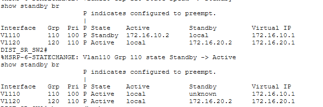

Part 4: First-Hop Redundancy with HSRP
Series: Enterprise Multi-Site Campus Network on GNS3. Part 4 of 8.
HSRP makes two physical Layer 3 switches look like one virtual gateway. Hosts use the virtual IP as their default gateway. The active switch forwards traffic and the standby switch takes over if it fails.
Addressing convention
The virtual gateway is the first address (.1) in the subnet. The two switches use .2 and .3 on their SVIs.
Load balancing
HSRP is configured per VLAN, so I split the active role like spanning tree: DIST-SW1 is active for some VLANs and DIST-SW2 for the others, and the HSRP active switch is the STP root for the same VLAN.
interface vlan 10
ip address 10.0.11.2 255.255.255.128
standby 10 ip 10.0.11.1
standby 10 priority 110
standby 10 preempt delay minimum 60
no shutdownI add a preempt delay so a rebooted switch does not take back the active role before its routing table and line cards are ready.
Failover test
I shut down the VLAN interface on the primary switch while a server pinged its gateway continuously. The standby switch moved to active, but in Packet Tracer pings kept failing, because the old active switch did not change state and the access layer never learned the new virtual MAC. Forcing a topology change by shutting the primary's links to the access layer flushed the MAC tables and pings recovered.

Screenshot to add: images/hsrp-failover.pngPing during HSRP failover (replace with your GNS3 output)'">
Useful check: show standby brief lists the active and standby switch for every VLAN.